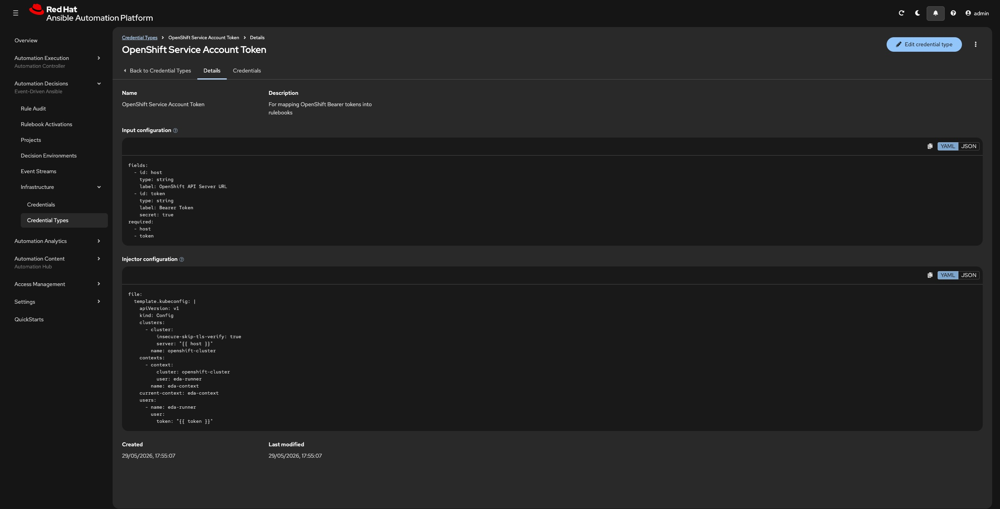
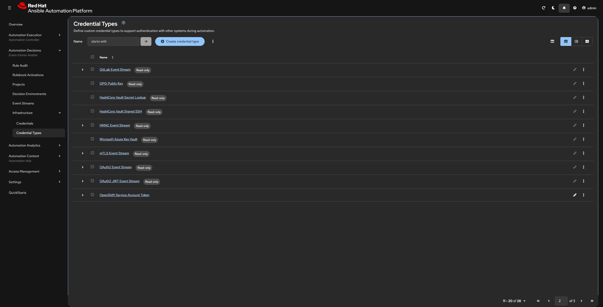
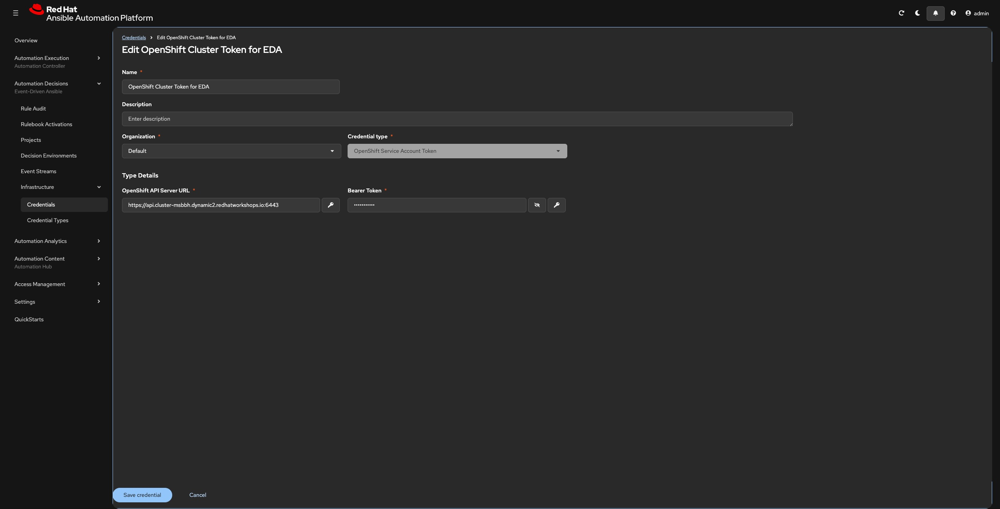
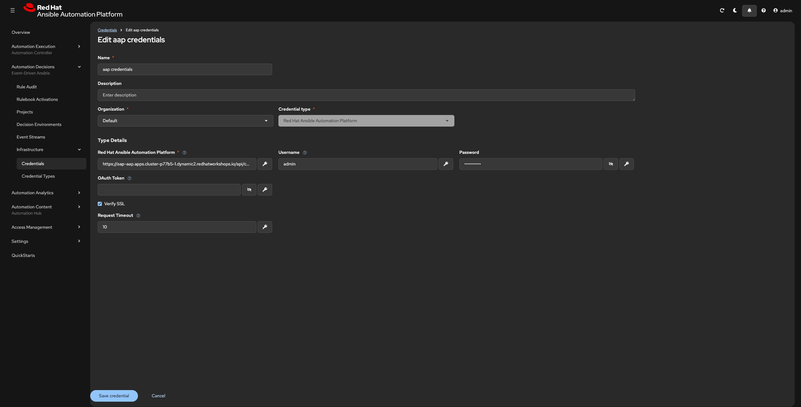
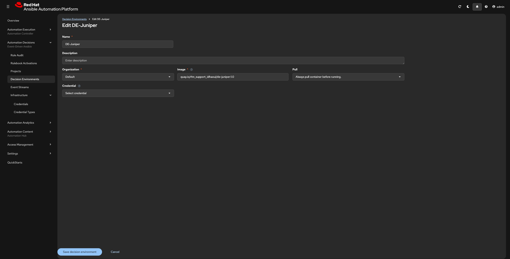

EDA Infra Definations¶
This is moment when you define credentials needed by the decision enviroment in Event Driven Ansible(EDA) to authenticate against the Target Openshift Cluster.
Credentials in AAP are never exposed in plaintext to rulebooks — they are injected at runtime via file projection or environment variables, depending on the credential type.
Credential Type¶
The custom credential type definitions extend the built-in credential types available in Automation Decisions with organisation-specific schemas — allowing you to pass structured, encrypted configuration to rulebooks and playbooks in a standardised, reusable way.
A custom credential type in AAP has three components:
| Component | Purpose |
|---|---|
| Input configuration | Defines the fields the user fills in when creating a credential (e.g. URL, username, token) |
| Injector configuration | Defines how the field values are exposed to the runtime — as environment variables, extra vars, or file-based credentials |
| Credential | An instance of the type — the actual values stored encrypted in AAP |
Once a custom credential type is created, you can create one or more credentials from it, assign them to Job Templates or Rulebook Activations, and the values are injected at runtime without appearing in logs or playbook source.
Creating Custom Credential¶
Step1: Log in to AAP
Step2: Navigate to Credentials
Name: OpenShift Service Account Token
Description: For mapping OpenShift Bearer tokens into rulebooks
Input Configuration
fields:
- id: host
type: string
label: OpenShift API Server URL
- id: token
type: string
label: Bearer Token
secret: true
required:
- host
- token
file:
template.kubeconfig: |
apiVersion: v1
kind: Config
clusters:
- cluster:
insecure-skip-tls-verify: true
server: "{{ host }}"
name: openshift-cluster
contexts:
- context:
cluster: openshift-cluster
user: eda-runner
name: eda-context
current-context: eda-context
users:
- name: eda-runner
user:
token: "{{ token }}"
{kind=link}

{kind=link}

Credentials¶
| System | Why | Credential Type | Details |
|---|---|---|---|
| OpenShift | To stream cluster events via the Juniper k8s.eda plugin | OpenShift Service Account Token | OpenShift Service Account Token |
| Ansible Automation Controller | To fire job templates when a rulebook rule matches | Red Hat Ansible Automation Platform | aap credentials |
Prerequisites Before you start you need:
1) The OpenShift cluster API URL.
oc whoami --show-server
2) The decoded bearer token from the EDA ServiceAccount.
oc get secret eda-token-secret -n aap -o jsonpath='{.data.token}' | base64 --decode
3) Red Hat Ansible Platform Host url and Credentials
Openshift¶
Step1: Log in to AAP
Step2: Navigate to Credentials
API Server URL: https://api.<your-cluster-domain>:6443 (this is part of the Prerequisites).
Bearer Token: (this is part of the Prerequisites)
{kind=link}

AAC¶
Step1: Navigate to Credentials
Step2: Fill in the credential form and save (like below)Red Hat Ansible Platform: https://aap-aap.apps.<your-cluster-domain> (this is part of the Prerequisites).
Username: admin
Password: (this is part of the Prerequisites)
{kind=link}

Decision Environment¶
Creating the Decision Environment in AAP
Prerequisites The custom DE image built and pushed to your registry Registry credentials if your registry requires authentication or make the image public.
Step1: Navigate to Decision Environments
Image: quay.io/rhn_support_idhaoui/de-juniper:1.0 ( This public image, custom built for the workshop)
{kind=link}

{kind=link}
Important Collections part DE Image¶
| Collection | Purpose |
|---|---|
ansible.eda |
Core EDA event sources and filters (webhook, kafka, alertmanager, etc). |
community.general |
General-purpose Ansible modules used in rulebook actions |
juniper.eda.k8s |
Kubernetes/OpenShift event source plugin — streams ADDED, MODIFIED, DELETED events from the cluster API |
Python dependencies part DE Image¶
| Package | Purpose |
|---|---|
aiokafka |
Async Kafka client — used by ansible.eda Kafka event source |
aiohttp |
Async HTTP client — used by webhook and HTTP-based event sources |
watchdog |
File system event monitoring |
kubernetes_asyncio |
Critical — async Python client for the Kubernetes API; required by the Juniper k8s event source to open and maintain the event stream |
kubernetes_asynciois the most critical Python dependency. Without it, the Juniper plugin cannot establish the async WebSocket connection to the OpenShift API and the rulebook will fail to start.